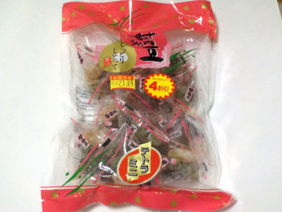

八雲製菓の甘納豆 しっとりしとって美味
2023/06/24

とってもお買い得だって思ったので買いました。
テトラパックの中には白花豆、青えんどう、金時豆、小豆が入っていました。1つのパックの中に入っている内容はまちまちです。
好きなものが多いと当り、少ないと外れって思いながら食べました。
甘納豆はホクホク感を出す商品が多いと思うんですが、この商品はしっとりが売りのようです。よそと違っているのは個性的な感じがしていいですね。
甘さ控えめなので、それぞれの味の違いが良くわかりました。